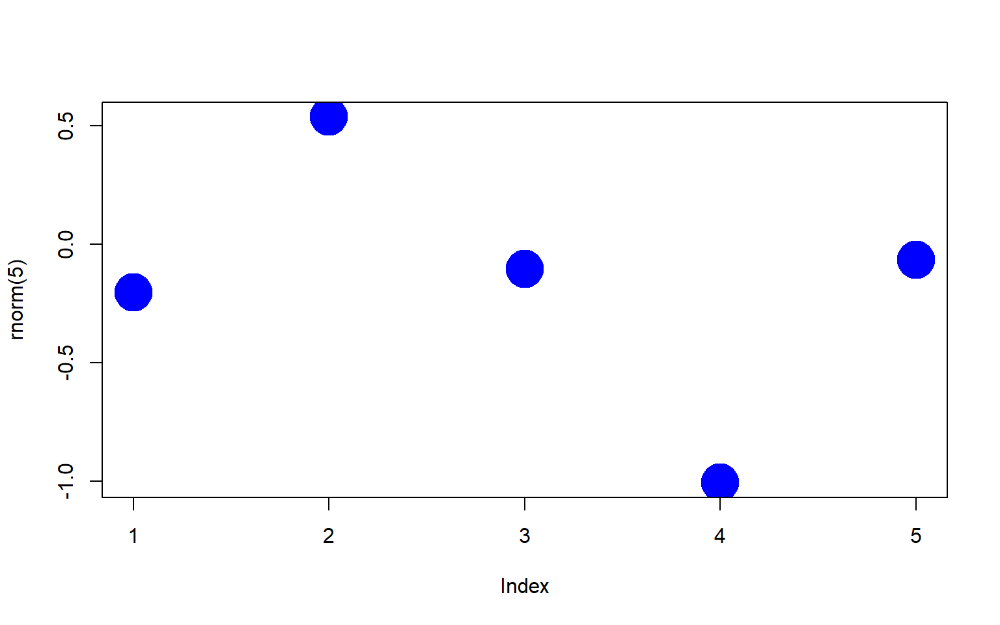
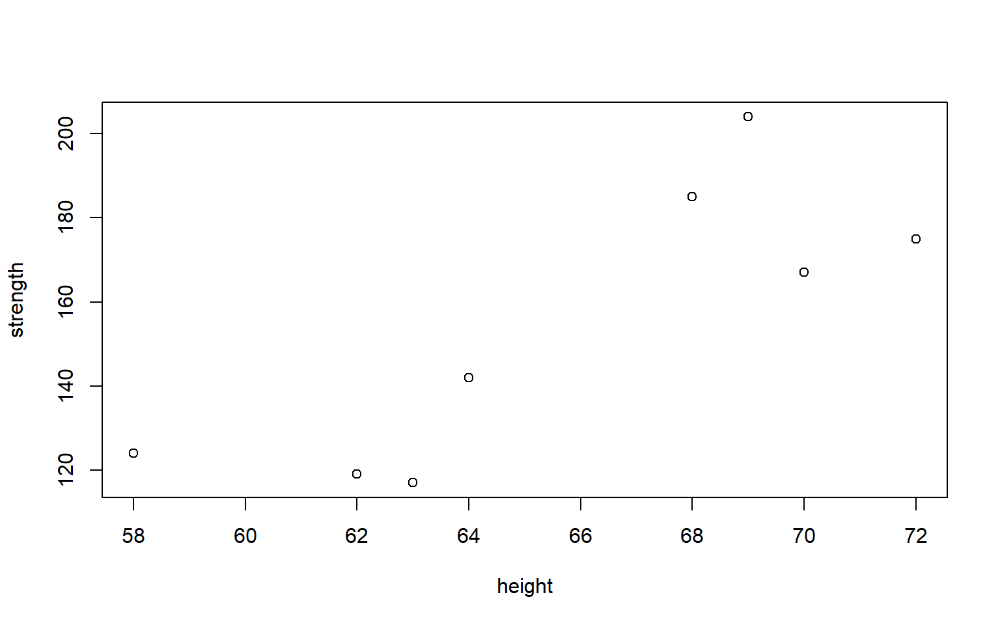
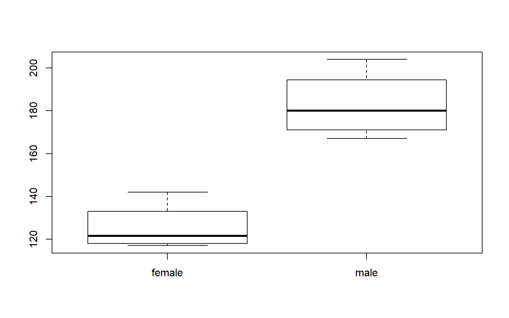
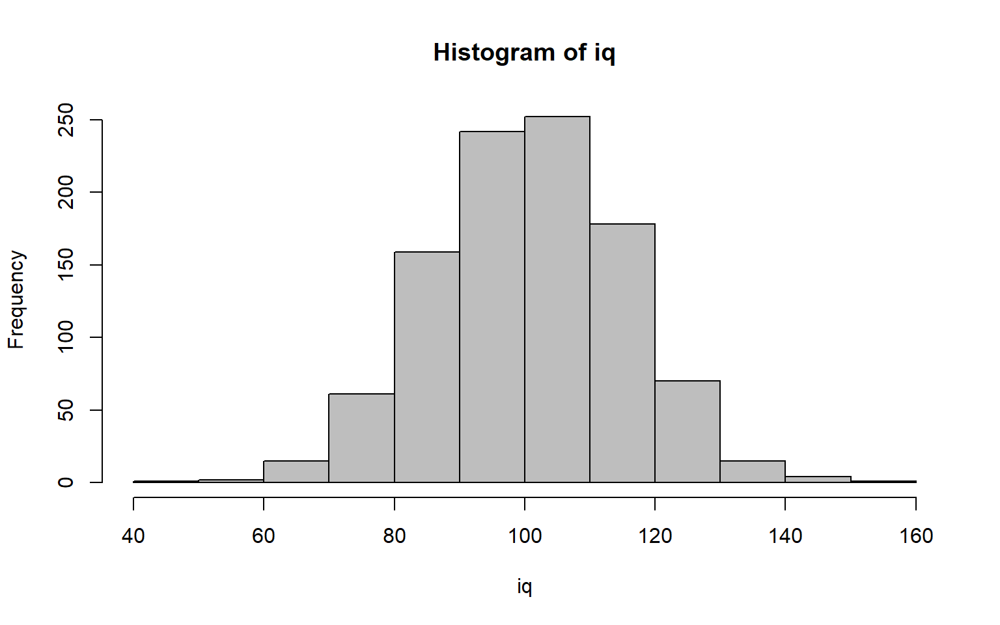

Chapter 3 Data Structures
3.1 Vectors
Vectors are the building blocks of data programming in R, so they are extremely important concepts.
Very loosely speaking a vector is a set of numbers or words. For example, [ 1, 2, 3] or [ apple, orange, pear ]. In social science, a vector is a variable in a dataset.
You will spend a lot of time creating data vectors, transforming variables, generating subsets, cleaning data, and adding new observations. These are all accomplished through operators (commands) that act on vectors.
There are four primary vector types (“classes”) in R:
| Class | Description |
|---|---|
| numeric | Typical variable of only numbers |
| character | A vector of letters or words, always enclosed with quotes |
| factor | Categories which represent groups, like treatment and control |
| logical | A vector of TRUE and FALSE to designate which observations fit a criteria |
Each vector or dataset has a “class” that tells R the data type.
These different vectors can be combined into three different types of datasets (data frames, matrices, and lists), which will be discussed below.
x1 <- c(167,185,119,142)
x2 <- c("adam","jamal","linda","sriti")
x3 <- factor( c("male","male","female","female") )
x4 <- c( "treatment","control","treatment","control" )
x5 <- x4 == "treatment"
dat <- data.frame( name=x2, sex=x3, treat=x4, is.treat=x5, strength=x1 )| name | sex | treat | is.treat | strength |
|---|---|---|---|---|
| adam | male | treatment | TRUE | 167 |
| jamal | male | control | FALSE | 185 |
| linda | female | treatment | TRUE | 119 |
| sriti | female | control | FALSE | 142 |
R keeps track of the data type of each object:
## [1] "numeric"## [1] "character"## [1] "factor"## [1] "logical"## [1] "data.frame"We often need to know how many elements belong to a vector, which we find with the length() function.
## [1] 167 185 119 142## [1] 43.2 Casting
You can easily move from one data type to another by casting a specific type as another type:
## [1] 1 2 3 4 5## [1] "1" "2" "3" "4" "5"## [1] TRUE FALSE TRUE TRUE FALSE## [1] 1 0 1 1 0## [1] "TRUE" "FALSE" "TRUE" "TRUE" "FALSE"But in some cases it might not make sense to cast one variable type as another.
## [1] "a" "b" "c"## [1] NA NA NACasting will often be induced when you try to combine different types of data. For example, when you add a character element to a numeric vector, the whole vector will be cast as a character vector.
## [1] 1 2 3 4 5# a vector can only have one data type
x11 <- c( x10, "a")
x11 # all numbers silently recast as characters## [1] "1" "2" "3" "4" "5" "a"When you read data in from outside sources, the input functions often will cast numeric vectors as factors if they contain a low number of elements. See the section on factors below for special instrucdtions on moving from factors to numeric vectors.
3.3 The Combine Function
We often need to combine several elements into a single vector, or two vectors to form one. This is done using the c() function.
## [1] 1 2 3## [1] "a" "b" "c"## [1] 1 2 3 4 5 10 11 12 13 14 15## [1] "1" "2" "3" "4" "5" "10" "11" "12" "13" "14" "15" "a"3.4 Numeric Vectors
There are some specific things to note about each vector type.
Math operators will only work on numeric vectors.
## Min. 1st Qu. Median Mean 3rd Qu. Max.
## 119.0 136.2 154.5 153.2 171.5 185.0Note that if we try to run this mathematicl function we get an error:
Many functions in R are sensitive to the data type of vectors. Mathematical functions, for example, do not make sense when applied to text (character vectors). In many cases R will give an error. In some cases R will silently re-cast the variable, then perform the operation. Be watchful for when silent re-casting occurs because it might have unwanted side effects, such as deleting data or re-coding group levels in the wrong way.
3.4.1 Integers Are Simple Numeric Vectors
The integer vector is a special type of numeric vector. It is used to save memory since integers require less space than numbers that contain decimals points (you need to allocate space for the numbers to the left and the numbers to the right of the decimal). Google “computer memory allocation” if you are interested in the specifics.
If you are doing advanced programming you will be more sensitive to memory allocation and the speed of your code, but in the intro class we will not differentiate between the two types of number vectors. In most cases they result in the same results, unless you are doing advanced numerical analysis where rounding errors matter.
## [1] 1 2 3 4 5## [1] "integer"## [1] 1.00 2.01 3.00 4.00 5.00## [1] "numeric"3.5 Character Vectors
The most important rule to remember with this data type: when creating character vectors, all text must be enclosed by quotation marks.
## [1] "a" "b" "c"When you type characters surrounded by quotes then R knows you are creating new text (“strings” in programming speak). When you type characters that are not surrounded by quotes, R thinks that you are looking for an object in the environment, like the variables we have already created. It gets confused when it doesn’t find the object that you typed.
In generate, you will use quotes when you are creating character vectors, and for arguments in functions. You do not use quotes when you are referencing an active object.
## [1] "dat" "Master" "n" "tab" "USArrests"
## [6] "x" "x1" "x10" "x11" "x2"
## [11] "x3" "x4" "x5" "y" "z"## [1] "x1"## [1] 167 185 119 142
# what if we want colors that represent groups in our data
plot( 1:4, x1, col=x3, pch=19, cex=4 ) # object used for color argument, no quotesRecall that x3 is the sex of study participants, so the different colors represent the different genders in the study.
3.6 Logical Vectors
Logical vectors are collections of a set of TRUE and FALSE statements.
Logical statements allow us to define groups based upon criteria, then decide whether observations belong to the group. See the section on operators below for a complete list of logical statements.
Logical vectors are important because organizing data into these sets is what drives all of the advanced data analytics (set theory is at the basis of mathematics and computer science).
## name sex treat is.treat strength
## 1 adam male treatment TRUE 167
## 2 jamal male control FALSE 185
## 3 linda female treatment TRUE 119
## 4 sriti female control FALSE 142## [1] FALSE FALSE FALSE TRUE## [1] TRUE TRUE FALSE FALSE## [1] FALSE TRUE FALSE FALSETypically logical vectors are used in combination with subset operators to identify specific groups in the data.
## name sex treat is.treat strength
## 1 adam male treatment TRUE 167
## 2 jamal male control FALSE 185
## 3 linda female treatment TRUE 119
## 4 sriti female control FALSE 142## name sex treat is.treat strength
## 3 linda female treatment TRUE 119
## 4 sriti female control FALSE 142When defining logical vectors, you can use the abbreviated versions of T for TRUE and F for FALSE.
## [1] TRUE TRUE FALSE TRUE FALSE FALSENote how NAs affect complex logical statements:
## [1] TRUE## [1] FALSE## [1] NA## [1] FALSEIf one condition is TRUE, and another is NA, R does not want to throw out the data because the state of the missing value is unclear. As a result, it will preserve the observation, but it will replace all of the data with missing values:
## name sex treat is.treat strength
## 1 adam male treatment TRUE 167
## 2 jamal male control FALSE 185
## 3 linda female treatment TRUE 119
## 4 sriti female control FALSE 142## name sex treat is.treat strength
## 1 adam male treatment TRUE 167
## NA <NA> <NA> <NA> NA NATo remove these rows, replace all NAs in your selector vector with FALSE:
## name sex treat is.treat strength
## 1 adam male treatment TRUE 1673.7 Factors
When there are categorical variables within our data, or groups, then we use a special vector to keep track of these groups. We could just use numbers (1=female, 0=male) or characters (“male”,“female”), but factors are useful for two reasons.
First, it saves memory. Text is very “expensive” in terms of memory allocation and processing speed, so using simpler data structure makes R faster.
Second, when a variable is set as a factor, R recognizes that it represents a group and it can deploy object-oriented functionality. When you use a factor in analysis, R knows that you want to split the analysis up by groups.
height <- c( 70, 68, 62, 64, 72, 69, 58, 63 )
strength <- c(167,185,119,142,175,204,124,117)
sex <- factor( c("male","male","female","female","male","male","female","female" ) )
plot( height, strength ) # simple scatter plot

Factors are more memory efficient than character vectors because they store the underlying data as a numeric vector instead of a categorical (text) vector. Each group in the data is assigned a number, and when printing items the program only has to remember which group corresponds to which number:
## [1] male male female female male male female female
## Levels: female male## [1] 2 2 1 1 2 2 1 1If you print a factor, the computer just replaces each category designation with its name (2 would be replaced with “male” in this example). These replacements can be done in real time without clogging the memory of your computer as they don’t need to be saved.
In some instances a categorical variable might be represented by numbers. For example, grades 9-12 for high school kids. The very important rule to remember with factors is you can’t move directly from the factor to numeric using the as.numeric() casting function. This will give you the underlying data structure, but will not give you the category names. To get these, you need the as.character casting function.
## [1] 12 9 9 11 9 10 10 10 12 12## [1] 12 9 9 11 9 10 10 10 12 12
## Levels: 9 10 11 12## [1] 4 1 1 3 1 2 2 2 4 4## [1] "12" "9" "9" "11" "9" "10" "10" "10" "12" "12"## [1] 12 9 9 11 9 10 10 10 12 12Note that when subsetting a factor, it will retain all of the original levels, even when they are not in use.
In this example, there are 37 teams in the Lahman dataset (some of them defunct) and 16 teams in the National League in 2002. But after applying the year and league subsets you will still have 37 levels.
# there are only 16 teams in the NL in 2002
sals.2002 <- Salaries [Salaries$yearID=="2002", ]
nl.sals <- sals.2002 [ sals.2002$lgID == "NL",]
levels( nl.sals$teamID )## [1] "ANA" "ARI" "ATL" "BAL" "BOS" "CAL" "CHA" "CHC" "CHN" "CHW" "CIN"
## [12] "CLE" "COL" "DET" "FLO" "HOU" "KCA" "KCR" "LAA" "LAD" "LAN" "MIA"
## [23] "MIL" "MIN" "ML4" "MON" "NYA" "NYM" "NYN" "NYY" "OAK" "PHI" "PIT"
## [34] "SDN" "SDP" "SEA" "SFG" "SFN" "SLN" "STL" "TBA" "TBR" "TEX" "TOR"
## [45] "WAS" "WSN"After applying a subset, in order to remove the unused factor levels you need to apply either droplevels(), or else recast your factor as a new factor.
For example:
sals.2002 <- Salaries [Salaries$yearID=="2002", ]
nl.sals <- sals.2002 [ sals.2002$lgID == "NL",]
levels( nl.sals$teamID )## [1] "ANA" "ARI" "ATL" "BAL" "BOS" "CAL" "CHA" "CHC" "CHN" "CHW" "CIN"
## [12] "CLE" "COL" "DET" "FLO" "HOU" "KCA" "KCR" "LAA" "LAD" "LAN" "MIA"
## [23] "MIL" "MIN" "ML4" "MON" "NYA" "NYM" "NYN" "NYY" "OAK" "PHI" "PIT"
## [34] "SDN" "SDP" "SEA" "SFG" "SFN" "SLN" "STL" "TBA" "TBR" "TEX" "TOR"
## [45] "WAS" "WSN"# fix in one of two equivalent ways:
#
# nl.sals$teamID <- droplevels( nl.sals$teamID )
# nl.sals$teamID <- factor( nl.sals$teamID )
levels( nl.sals$teamID )## [1] "ANA" "ARI" "ATL" "BAL" "BOS" "CAL" "CHA" "CHC" "CHN" "CHW" "CIN"
## [12] "CLE" "COL" "DET" "FLO" "HOU" "KCA" "KCR" "LAA" "LAD" "LAN" "MIA"
## [23] "MIL" "MIN" "ML4" "MON" "NYA" "NYM" "NYN" "NYY" "OAK" "PHI" "PIT"
## [34] "SDN" "SDP" "SEA" "SFG" "SFN" "SLN" "STL" "TBA" "TBR" "TEX" "TOR"
## [45] "WAS" "WSN"## [1] "ARI" "ATL" "CHN" "CIN" "COL" "FLO" "HOU" "LAN" "MIL" "MON" "NYN"
## [12] "PHI" "PIT" "SDN" "SFN" "SLN"3.8 Generating Vectors
You will often need to generate vectors for data transformations or simulations. Here are the most common functions that will be helpful.
## [1] 9 9 9 9 9## [1] 5 7 5 7 5 7 5 7 5 7## [1] 5 5 5 5 5 7 7 7 7 7## [1] "treatment" "treatment" "treatment" "treatment" "treatment"
## [6] "control" "control" "control" "control" "control"## [1] 1 2 3 4 5 6 7 8 9 10 11 12 13 14 15## [1] 1 4 7 10 13## [1] 1 2 3 4 5 6 7 8 9 10 11 12 13 14 15## [1] "a" "f" "b"## [1] "c" "b" "f"## [1] "b" "a" "f"## [1] "b" "b" "a" "b" "b" "c" "c" "f" "b" "c"# create data that follows a normal curve
iq <- rnorm( n=1000, mean=100, sd=15 )
hist( iq, col="gray" )